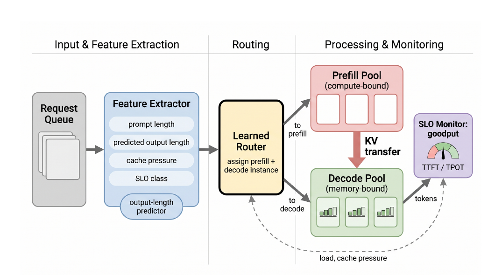
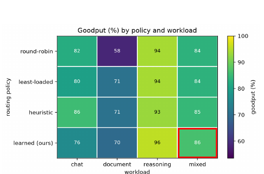
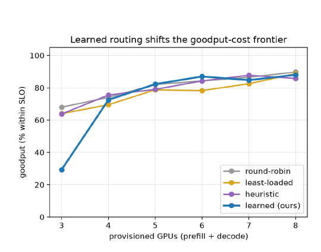
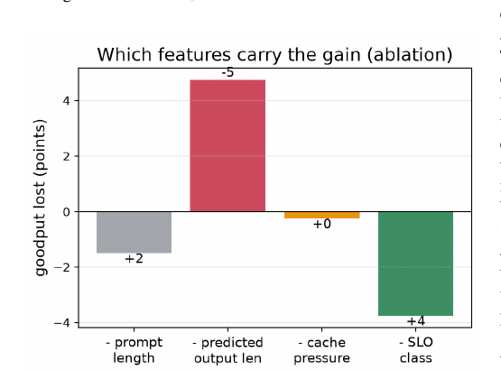

Calibrate, Then Route: A Measured Study of Learned Request Routing for Disaggregated LLM Serving
P/D 分離把計算密集的 prefill 與記憶體頻寬受限的 decode 拆到不同 GPU pool，卻沒有回答每個新請求該排去哪一組 instance。這篇論文把 placement 改寫成「新請求在候選 instance 上增加多少完成時間」：用 prompt 長度、預測輸出長度、加入後的 KV-cache 壓力與 SLO 類別評分，並先以目標硬體量測校準服務時間。
實驗事實在 8×NVIDIA A40、vLLM 0.12、NIXL 的單機 P/D 叢集上，校準後 router 在三條 mixed-bursty trace 的平均 goodput 為 0.864，高於 0.835–0.847 的三個 baseline；但它在只有三個 instance 或極度資源不足時沒有優勢，甚至會因 greedy argmin 集中負載而崩潰。§V · PDF pp.4–6 · Table II / Figs. 3–9
文章目錄
先分清 prefill、decode 與 goodput，才看得懂 routing 為何難
這一章先補三個會在後文反覆用到的概念：P/D 分離改變了資源瓶頸、SLO 不是平均延遲、而 queue length 不等於剩餘工作量。理解這三點，才知道為什麼「選最短隊列」在請求長短差很多時會失真。
同一個 inference request 其實包含兩種不同工作
Prefill 一次讀完 prompt，通常以大矩陣運算吃滿計算單元；decode 則逐 token 生成，每一步都要讀取持續長大的 key-value cache（KV cache），更容易受記憶體頻寬限制。Prefill/decode disaggregation（P/D 分離）把兩階段放到不同 GPU pool，prefill 完成後再把 KV cache 交給 decode instance，以避免兩種工作在同一 GPU 上互相干擾。§I · PDF p.1
| 階段 | 主要輸入與輸出 | 典型瓶頸 | routing 需要估什麼 |
|---|---|---|---|
| Prefill | 完整 prompt → 第一批 KV state | 計算吞吐、長 prompt、chunked prefill 競爭 | prompt 長度 \(p_r\) 與硬體 prefill 時間 \(\tau_{\mathrm{pre}}\) |
| Decode | KV state → 逐 token 輸出 | 記憶體頻寬、持續佔用、KV 容量 | 預測輸出長度 \(\hat{o}_r\)、每 token 時間 \(\tau_{\mathrm{dec}}\) 與 cache pressure |
Goodput 問的是「有多少請求達標」，不是只問跑了多少
Time to First Token（TTFT）量第一個 token 出現前的等待，Time per Output Token（TPOT）量後續 token 的節奏；論文把同時符合指定 TTFT 與 TPOT SLO 的請求比例當作 goodput。主要實驗的 tight SLO 是 TTFT 175 ms、TPOT 39.7 ms，loose class 是前者的 3 倍。§IV-B · PDF p.4
分析這使 routing 目標與「平均完成速度最快」不同：一個 placement 即使只讓少數長請求排到錯的 instance，也可能同時讓它與後方多個短請求越過 SLO 線，因此尾端延遲與最差 trace 不能被平均值遮住。
Queue count 只數件數，backlog 才嘗試估時間
Round-robin 完全不看負載；Join-Shortest-Queue（JSQ）或 least-loaded 至少看目前有幾個 request，卻把短聊天與上千 token 的 reasoning request 都算成「一件」。本文的 backlog 改以秒表示已承諾工作，再把新請求自己的 prompt／預測輸出長度納入；這個時間尺度是否正確，正是後文 calibration 成敗的核心。§III-A–B · PDF pp.2–3
後文對應
P/D 差異對應兩套 cost；TTFT/TPOT 對應 SLO class；queue 與 backlog 的差異對應 calibration ablation。
不必先懂
不需要深入 NIXL 內部協定。本文把 KV transfer 當作既有機制，研究的是 admission-time placement。
兩個 pool 已經分開，真正未解的問題因此浮現：每個 request 到底該配哪一個 prefill 與 decode instance？
P/D 已拆開，為何逐請求 placement 仍會拖垮 SLO？
理解障礙在於：DistServe、Splitwise、Mooncake 已經證明 P/D 分離可行，直覺上 placement 似乎只是「挑一台空的」。但在 heterogeneous、bursty traffic 下，instance 看起來空閒，不代表接下這個 request 後仍能守住 SLO。
症狀：件數相同，未來佔用時間可能差兩個數量級
一個短聊天與一個長 reasoning request 對 round-robin 或 JSQ 都是一個 request；後者卻可能長時間佔用 decode slot、擴張 KV cache，並把後續 request 一起推過 SLO。論文把研究問題限定在跨 prefill/decode instance 的 admission-time assignment：engine 內部 continuous batching、chunked prefill，以及 admission 後的 request migration 都不是本文要替換的層次。§I–II · PDF pp.1–2
最接近的 baseline 各少看一塊
| Policy | 看見什麼 | 主要盲點 |
|---|---|---|
| Round-robin | 輪流分派 | 請求大小、當下負載、cache 與 SLO 全部不可見 |
| Least-loaded / JSQ | request count | 一長一短仍各算一件，count 不等於秒數 |
| Length threshold heuristic | 預測長度的分段規則 | 對 live backlog、post-admission cache 與 SLO 的組合反應有限 |
| 本文 router | prompt、預測輸出、backlog、cache pressure、SLO | 依賴校準；greedy argmin 可能集中負載 |
真正需要的是以「這個 request 放到這個 instance 後會增加多少完成時間」評分，而不是再發明一個 count heuristic。可用訊號幾乎都在 admission 時取得：prompt 長度是精確值、輸出長度可估計、cache occupancy 可輪詢，SLO class 隨 request 進來。§I · PDF p.1
從失效機制反推六項設計要求
- 大小感知：至少區分 prompt work 與預期 decode work。
- 時間尺度：把既有 backlog 與新工作放到可比較的秒數單位。
- 加入後狀態：評估 post-admission cache pressure，而不是只讀現在。
- SLO 感知：tight request 的負載代價要比 loose request 更高。
- 硬體校準：服務時間常數必須來自目標叢集，不能直接搬 simulator 值。
- 可辨識邊界：要知道何時 informed placement 有價值、何時回到簡單 spreading 更好。
分析因此將本文歸在 LLM Systems / Request Scheduling：主要貢獻是 admission routing 的成本模型與量測邊界；NIXL 與 KV transfer 是承載實驗的資料路徑，不是新 transport protocol。
下一步不先看完整公式，而是把 scorer 想成兩只必須校準到同一單位的「工作時鐘」。
把「排到哪裡」改寫成邊際完成時間，router 才能看見請求大小
最小心智模型是：每個 decode instance 前面都有一條以「秒」標示的待辦清單；router 不只問哪條清單最短，還估算新 request 加入後，自己的 decode work、cache 壓力與 SLO 緊迫度會把哪條清單推高多少。
從「一件 request」換成「多少秒的承諾工作」
想像 A、B 兩個 decode instance 都只有一件 in-flight request。JSQ 會判定兩者平手；若 A 的既有工作即將結束、B 的工作還會生成上千 token，它們的剩餘成本顯然不同。本文先用 backlog(d) 表示 instance \(d\) 已承諾的秒數，再把新 request 的預測輸出 token 數乘上硬體每 token 時間，得到 request-specific work。
符號對應：\(\hat{o}_r\) 是 request \(r\) 的預測輸出長度；\(\tau_{\mathrm{dec}}\) 是目標硬體量到的每 token decode 時間；\(\operatorname{press}^{+}(d)\) 是把 request 放入後的 cache pressure；\(\sigma(s_r)\) 放大 tight-SLO request 的代價；\(w_b,w_s,w_q,\rho\) 是手設權重。Prefill 使用同一結構，但把 work 換成 \(p_r\tau_{\mathrm{pre}}\)。§III-A · PDF p.2
分析這個式子不是精確的 completion-time simulator；它是一個排序器。關鍵不是把每毫秒算到完全正確，而是讓 backlog 與 request work 的相對量級不要失真，並在每個候選 instance 上使用相同單位比較。
Calibration 為何不是部署後微調，而是方法的一部分
若 backlog 來自真實秒數，但 \(\hat{o}_r\tau_{\mathrm{dec}}\) 使用過小的 simulator 常數，size-aware term 會被壓到幾乎沒有影響，router 表面上仍跑同一個公式，實際上卻退化為 queue counting。論文在目標叢集先跑約五分鐘 benchmark，量 prefill latency curve 與 concurrency 下的 decode rate，以設定 \(\tau_{\mathrm{pre}}\)、\(\tau_{\mathrm{dec}}\) 與 SLO；其 simulator-derived \(\tau_{\mathrm{dec}}\) 比實測小 7.4×。§III-B · PDF p.3
本文最重要的洞見不是「多放幾個 feature」，而是觀測到的 backlog 與模型估出的新增工作必須共享可信的物理尺度；否則 learned scorer 只是在用複雜形式重現簡單 heuristic。
這個直覺也說明簡化的極限：continuous batching 會讓多個 sequence 共享 GPU，長短序列的 intra-batch interference、chunked-prefill contention 與 KV fragmentation 都不是上述加法式成本能完整描述。作者後來把 batching 加進 simulator，雖能改善絕對延遲，仍無法重現硬體上的 policy 排名。§VI · PDF pp.5–6
有了這兩只「工作時鐘」，現在可以沿著一次 request，從 admission 走到 KV transfer 與 SLO 回饋。
四個 admission-time 訊號如何走完整條 routing 流程？
這一章解決的是「公式如何落在真正資料路徑上」。一次 request 在 admission 時只做一次 feature extraction 與兩次 argmin，之後仍由未修改的 vLLM engine 執行 prefill/decode，KV cache 由 NIXL 在 pool 間傳送。
端到端：先決定兩個 instance，再執行 P/D handoff
- Router 讀取精確 prompt 長度 \(p_r\)、SLO class \(s_r\)，並預測輸出長度 \(\hat{o}_r\)。
- 對每個 prefill candidate 計算 \(p_r\tau_{\mathrm{pre}}\) 版本的 marginal cost，選最小者 \(i_{\mathrm{pre}}\)。
- 對每個 decode candidate 計算含 backlog、\(\hat{o}_r\tau_{\mathrm{dec}}\)、post-admission cache pressure 與 SLO 的 cost，選 \(i_{\mathrm{dec}}\)。
- 在 \(i_{\mathrm{pre}}\) 執行 prefill，透過 NIXL 把 KV cache 傳到 \(i_{\mathrm{dec}}\)，完成 decode，並記錄 TTFT、TPOT 與是否達成 SLO。
{kind=link}

四個訊號各回答一個不同風險
Prompt length
估 prefill work；是精確 admission-time 值。
Predicted output length
估 decode 佔用；後續 ablation 顯示它是主要承載 feature。
Post-admission cache pressure
避免把新 request 放入後逼近 KV budget；但本實驗沒有真的觸及 60k-token 上限。
SLO class
放大 tight request 的 load term；效果依負載區間改變。
Calibration 與 predictor 是可替換但不可省略的前置件
Calibration benchmark 約五分鐘，負責把 prefill/decode work 換成目標硬體的時間尺度；輸出長度 predictor 則刻意保持簡單，因為 router 只需要量級訊號。論文以最高 150% relative error 注入 predictor 來測容忍度，而不是把 predictor 準確率與 scheduler 優勢混成同一件事。§III-B–C · PDF p.3
硬體 harness 如何避免把系統雜訊誤認為 policy 效果
| 項目 | 設定 | 為何重要 |
|---|---|---|
| 硬體與模型 | 單機 8×NVIDIA A40；Qwen2.5-3B；BF16；TP=1 | 所有 headline number 的適用範圍 |
| Serving stack | 每 GPU 一個未修改 vLLM 0.12 engine；NixlConnector | 只替換 routing policy，不改 engine |
| 主要 pool | 2 prefill + 4 decode；另測 3–8 GPU pool shape | 分辨 width 與 provisioning frontier |
| KV 與 telemetry | 每 engine 60,000-token KV budget；50 ms 輪詢 occupancy | 限定 cache-pressure 結論 |
| Correctness gates | token-count contract、跨 GPU greedy output bitwise 等價、每個 prefill×decode pair warmup | 排除冷 NIXL pair 與輸出差異 |
| Run isolation | 每次重設 prefix cache；各 workload 先尋找 round-robin mid-collapse 的 saturation point | 避免 session ordering 與過輕負載掩蓋差異 |
實驗事實作者表示所有 §V 數字都來自硬體，simulator 只用於提出假設；這個區分很重要，因為後續顯示 simulator 即使加入 continuous batching，也無法重現任何 workload 的 measured winner。§III-D–IV · PDF pp.3–4
方法是否有效，不能用一個總平均回答；要分成 mixed traffic、同質 workload、pool width、資源飢餓與 feature ablation 逐項對照。
校準後何時勝出，又在哪些 workload 失效？
這一章把每個結論綁回它真正測到的 workload、控制條件與 caveat。先看主要 mixed-bursty 結果，再用 heterogeneity、pool width、calibration 與 ablation 找出因果邊界。
主張一：在 mixed-bursty traffic，校準 router 的平均與最差 trace 都較穩
測試：2 prefill + 4 decode、三條 arrival trace；每條都在該 workload 的 measured saturation point 執行。控制：相同 vLLM/NIXL harness，只替換 round-robin、JSQ、length threshold 或 learned selection rule。
| Policy | Goodput | P99 TTFT | P99 TPOT |
|---|---|---|---|
| Round-robin | 0.836 | 0.337 s | 0.018 s |
| Least-loaded (JSQ) | 0.835 | 0.346 s | 0.018 s |
| Length threshold | 0.847 | 0.318 s | 0.018 s |
| Learned router | 0.864 | 0.321 s | 0.018 s |
實驗事實Learned router 三條 trace 為 0.860/0.877/0.855，平均最高且 spread 最小；它贏 round-robin 與 heuristic 三次，對 JSQ 贏兩次，唯一落後的一次差 0.003。§V-A · PDF p.4 · Table II
界線：它不是每個 latency metric 都第一；length heuristic 的平均 P99 TTFT 更低 3 ms。論文稱 0.003 在 run-to-run noise 內，但未提供 error bar 或顯著性檢定。
主張二：價值來自 heterogeneity，不是 learned policy 本身永遠更好
測試：chat、document、reasoning、mixed 四種 workload 各自在自己的 saturation point 比較。Chat 是 short-in/short-out；document 最長 4k prompt、短輸出；reasoning 是短輸入、長輸出；mixed 同時異質且 bursty。
{kind=link}

實驗事實Learned router 在 mixed 為 0.864、reasoning 為 0.955；chat 則由 heuristic 的 0.855 勝過 learned 的 0.760。Document 中 round-robin 降到 0.585 且 tail 約 1.1 s，三個 load-aware policy 都至少 0.695。§V-C · PDF p.4 · Fig. 3
支持的結論：當 request 長度差異大時，size-aware placement 有價值；不支持：不能說 feature 越多就普遍越好。
主張三：硬體 calibration 本身貢獻 4.5 個 goodput points
測試：同一 learned policy、同三條 mixed trace，只把 cost constants 從目標 A40 實測值換成 simulator-derived 值。觀察：未校準 goodput 0.819、P99 TTFT 0.42–0.52 s；校準後為 0.864、0.25–0.30 s。§V-B · PDF p.4
分析4.5 points 與約 40% tail advantage 說明 calibration 不是「部署調參」的附帶工作，而是讓 size-aware term 不被真實 backlog 淹沒的 identifiability 條件。Caveat 是作者沒有把這個 effect 分解成每一個常數的獨立敏感度。
主張四：中間 provisioning 區間省 GPU，飢餓區間反而危險
{kind=link}

實驗事實Width=3 時 learned 與 JSQ 為 0.816 vs. 0.822；width=4 時為 0.864 vs. 0.835；width=6 的 operating point 有 headroom，learned 0.858 與 round-robin 0.860 再度接近。按 pool shape 掃描時，learned 在 6 GPU 達 0.870，約等於 round-robin 使用 7 GPU 的 service，即約少 14% GPU。§V-D–E · PDF pp.4–5 · Fig. 4
反例：在 1 prefill + 2 decode 的 extreme scarcity，learned 只有 0.292，round-robin 為 0.680；作者重做四次仍見 inversion。Greedy argmin 把 request 集中到瞬間最便宜的 instance，資源全面過載時，盲目 spreading 反而較安全。
主張五：需要輸出長度訊號，但不需要非常準的 predictor
{kind=link}

實驗事實移除 predicted output length 在 steady load 損失 3.2 points、saturation 損失 4.7；cache pressure 在 60k-token budget 下沒有可測貢獻；SLO term 在 moderate load 有幫助，deep saturation 時移除它反而增加 3.7 points。將 predictor relative error 從 0 注入到 150% 時，goodput 落在 0.838–0.880 的 trace-noise 範圍，最差噪音下仍勝過 heuristic。§V-G–H · PDF pp.5–6 · Figs. 8–9
支持的結論：能區分大致長短比精確 token 數更重要。不支持：這個實驗不能證明 cache pressure 不重要，因為它的壓力區間根本沒有被觸及。
這些結論能推到 production cluster 多遠？
最容易誤讀的地方，是把「在一組真實硬體上量到」擴大成「已證明 production 普遍成立」。這篇工作的價值正好相反：它把哪些結論能成立、哪些條件尚未覆蓋，量得相當清楚。
強項：作者主動驗證 simulator 為何會給出錯的信心
實驗事實原 simulator 的 service constants 與 A40 實測差 7–13×，serial-service model 也高估 head-of-line blocking。加入 continuous batching 後，三種 workload 的 P99 TTFT 誤差從 1–63× 降到 0.5–1.4×，但四種 policy 在 bursty case 的預測差距仍小於 0.01，而硬體量到約 0.03；它仍沒有預測對任何 workload 的 winner。§VI · PDF pp.5–6
分析這比單純報 simulator/hardware correlation 更有研究價值：作者指出 simulator 可把「真實剩餘工作」直接交給 policy，而 deployment proxy 只能用自己的錯誤常數估 backlog。若模型偷偷給 scheduler 一個 production 不可能取得的 oracle signal，模擬中的成功無法證明可部署。
外部效度：目前只覆蓋單機、單一 silicon、3B 模型
- 硬體：每組實驗只用 NVIDIA A40；不同 GPU 的 batching 曲線、記憶體容量與服務時間都需重校準。
- 拓樸：NIXL transfer 在單機內完成。作者說 cross-node RDMA 可加入 transfer term，但沒有實驗；網路排隊、NIC contention、拓樸非對稱都尚未驗證。
- 模型：Qwen2.5-3B、BF16、TP=1。更大模型、tensor/expert parallel 或 multi-node decode 可能改變 cost 結構。
- Cache regime：60k-token budget 未飽和，因此 cache pressure feature 的成效仍未知。
- 權重與重現：論文說 weights 為手設、constants 由校準得到，但 exact weights、公開程式碼位置與完整 workload trace 生成方式論文未提供。
統計與比較：方向可信，但精度不宜過度解讀
Headline result 使用三條 trace，並對 scarcity inversion 重做四次；這比單次 benchmark 更扎實。然而主要圖表沒有 confidence interval，0.003 被描述為 run-to-run noise，卻未呈現估計方法。每種 workload 又使用自己的 saturation point，因此 Figure 3 適合回答「各 workload 內誰較好」，不適合把不同欄的絕對 goodput 當成同一 request rate 下比較。§IV-B / §V-A–C · PDF p.4
在跨機 P/D pool，transfer queue 與 topology locality 可能和 predicted output length 一樣成為主導 feature；但在取得 multi-node trace 前，不能把單機的 14% GPU 節省直接換算成 production capacity。
本文真正能支持的部署判斷
分析若 pool 至少有四個可選 instance、traffic 明顯異質、系統處於有 contention 但未全面過載的區間，硬體校準的 size-aware scorer 值得測；若 pool 很窄、已進入 extreme scarcity，或 workload 高度同質，simple spreading/JSQ 可能更穩。這是一張 operating-region map，不是單一 universal policy。
因此合理的下一步不是把 argmin scorer 原封不動擴大，而是替它加上「何時切換、何時拒絕、何時只抽樣少數候選」的安全護欄。
如何把一個有用但會集中負載的 scorer 變成可部署 policy？
可重用的設計思想是「用量測校準 request-specific marginal cost」；要把它變成 production policy，還需要顯式處理負載集中、拓樸、模型漂移與 operating-region 切換。
四個最值得做的 follow-up experiment
- Greedy guardrail：推測比較 full argmin、power-of-two sampling、softmax sampling 與 admission guard，在 1P+2D 到 2P+6D 的相同 scarcity sweep 上量 concentration、goodput 與 tail。這直接測試作者留下的 mitigation。
- 把 network cost 放進同一物理尺度：分析在跨 node NIXL/RDMA 上加入 KV bytes、link utilization、NIC queue、hop/rail locality 與 transfer overlap；以實測 transfer completion time 校準，而不是只加一個固定延遲。
- 逼近真正 cache-pressure regime：分析用較長 context、較小 KV budget 與 prefix reuse，使 eviction、fragmentation、cache hit/miss 真正出現，再重做 feature ablation，判斷 pressure 是否從 inert 變成 load-bearing。
- Online recalibration 與 drift detector：推測把五分鐘離線 benchmark 延伸為低頻 background probe，當實測 token service time 或 tail residual 超過門檻時，暫時退回 JSQ/round-robin 並更新 constants。
從單一 scorer 升級成 region-aware policy
本文的結果其實暗示一個兩層 controller：外層先判斷 pool width、headroom、heterogeneity 與 overload；內層才在 informed routing、JSQ 與 blind spreading 間選 policy。這比讓同一組 weights 同時處理 chat、mixed traffic 與 extreme scarcity 更符合證據。
推測這是依本文 operating-region evidence 提出的延伸，不是作者已驗證的演算法。
研究討論可用的五個問題
- 若 output-length predictor 只需量級，最小可用訊號是分桶、排名，還是 token 數回歸？
- Cross-node KV transfer 的 cost 應與 request completion time 相加，還是需要顯式建模 compute/communication overlap？
- 如何在不使用未來資訊的前提下，為 simulator 建立和 deployment proxy 完全相同的 backlog estimator？
- Goodput、GPU cost 與 fairness 之間應採單一加權目標，還是以 constraint + frontier 呈現？
- Policy 切換造成的 hysteresis、冷 cache 與 NIXL pair warmup，會不會抵銷 region-aware controller 的收益？
最後把所有關鍵結論壓回可核對的頁碼、圖表與術語，方便重讀或簡報引用。
查證路徑：metadata、術語與關鍵證據在哪裡？
論文資訊
- 正式標題
- Calibrate, Then Route: A Measured Study of Learned Request Routing for Disaggregated LLM Serving
- 作者
- Srikanta Datta Tumkur；Jay Iyer；Mehar Simhadri；Sai Pavan Kumar；Sai Kapil Kumar；Ramesh Nampelly
- 機構
- Vizuara
- 版本
- arXiv:2609.16206v1，2026-09-14，分類 cs.AI
- 頁數
- 共 7 頁
- Canonical page
- arXiv abstract page ↗
- 全文
- 開啟本地 PDF
- Venue / DOI
- 論文未提供正式會議／期刊資訊與 DOI。
術語表
- P/D disaggregation
- 把 prefill 與 decode 放在不同 GPU pool，兩階段間傳送 KV cache。
- Goodput
- 同時符合 TTFT 與 TPOT SLO 的 request 比例；本文不是用 raw throughput 當 headline metric。
- Backlog
- Router 估計某 instance 已承諾的剩餘工作秒數。
- Marginal cost
- 把新 request 放到某 instance 後，估計它在該處承受的 completion-time 代價。
- JSQ
- Join-Shortest-Queue，本文對應 least-loaded baseline，以 request count 選最短隊列。
- NIXL
- NVIDIA Inference Xfer Library；本實驗透過 NixlConnector 在 prefill/decode engine 間移動 KV cache。
- Cache pressure
- Request 加入後 KV budget 的壓力；本實驗 60k-token budget 未飽和，因此 feature 未顯示可測收益。
關鍵證據索引
- 問題與定位：分離 prefill/decode 後仍留下 per-request placement；四個 admission-time 訊號的研究問題。§I–II，PDF pp.1–2。
- Scorer 與校準：decode cost equation、prefill analog、五分鐘 calibration、7.4× τdec 誤差、predictor noise 設計。§III，PDF pp.2–3，Algorithm 1 / Fig. 2。
- 實驗環境：8×A40、vLLM 0.12、Qwen2.5-3B BF16 TP=1、NIXL、2P+4D、60k KV、correctness gates、saturation search。§IV，PDF pp.3–4，Table I。
- 主要結果與異質性：mixed-bursty 三 trace、0.864 goodput、P99、各 workload policy 差異。§V-A–C，PDF p.4，Table II / Fig. 3。
- Pool width 與 provisioning frontier：width 3/4/6、約 14% fewer GPUs、starved collapse 0.292 vs. 0.680。§V-D–F，PDF pp.4–5，Figs. 4–7。
- Feature 與 predictor：output length removal 3.2/4.7 points、cache inert、SLO regime dependence、150% noise。§V-G–H，PDF pp.5–6，Figs. 8–9。
- 模擬落差與適用邊界：7–13× constants gap、batching 改善絕對值但不修正排名、單機／單 silicon／3B scope。§VI–VII，PDF pp.5–7。